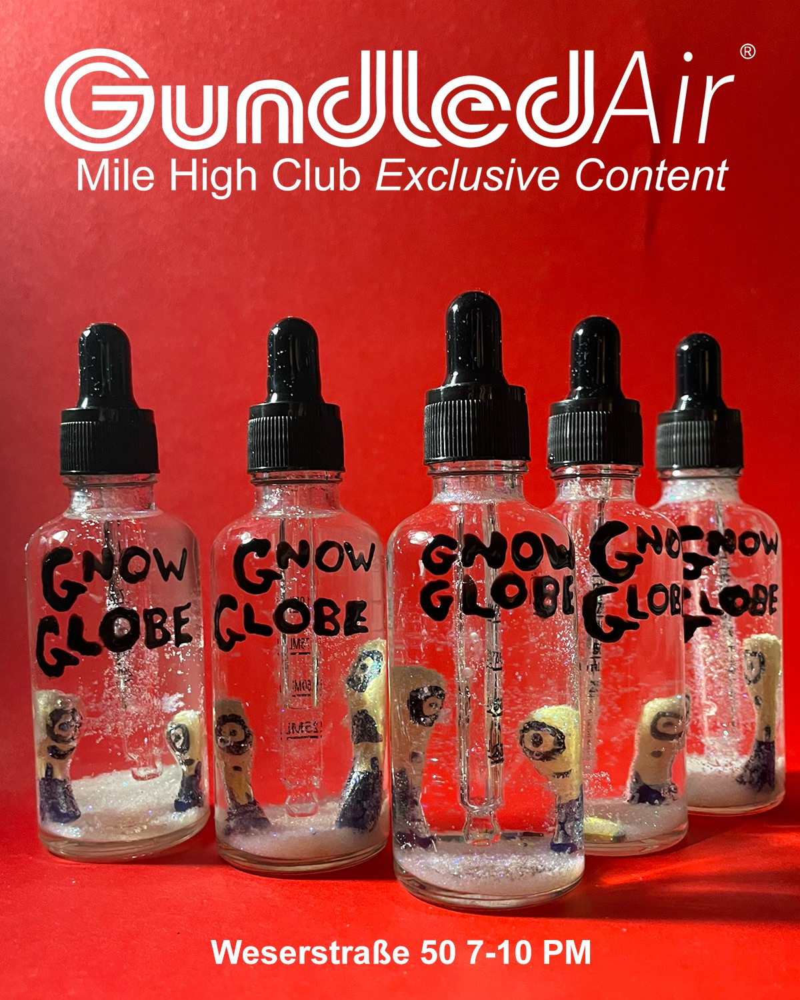

released December 6, 2024
contributors:
Tomi Haxhi
Eddie Baker
Colin Murphy
Huge thanks to friends who sent us ideas and smut for the back pages:
Anaury, Ashkan, Bebe, Ben, Blair, Brian, Caleb, Chris, Danna, Eric, Farah, Jacob, Josh, Juliet, Kari, Kira, Matt, Moritz, Noa, Patrick, Sebastjan, Silas, Syd, Valerio, Virgil, Yaki, and Zack
edited, designed and published by Eddie Baker and Colin Murphy.
Our second issue is currently for sale at Printed Matter in New York and available by request.
Here are some images and objects we made for the launch.


